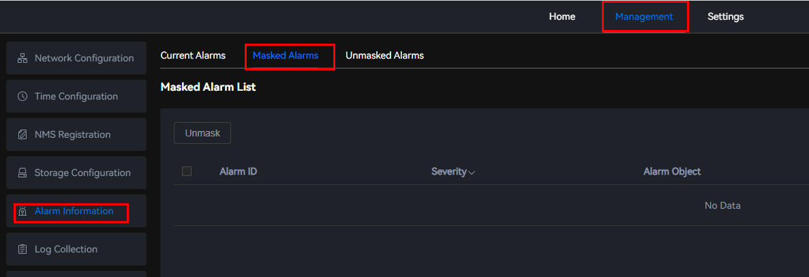
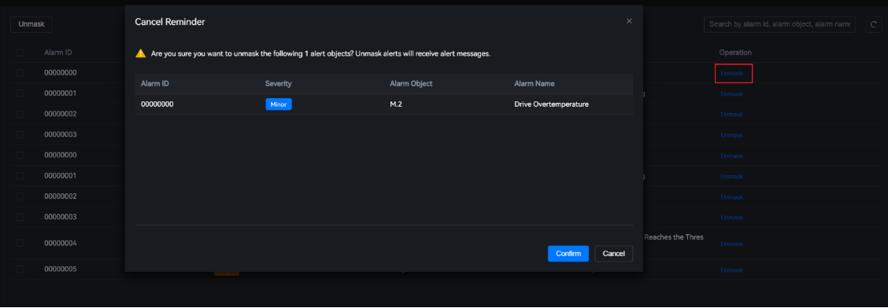

Scenarios
On this page, you can view or unmask alarms. When faults occur in the system, the unmasked alarms are displayed on the Current Alarms page.
Unmasking Alarms
- Choose .
The Masked Alarms page is displayed. You can view the number of masked alarms, alarm IDs, severities, alarm objects, and alarm names.
Figure 1 Masked alarms
 - Select in the row that contains the target alarm.Figure 2 Selecting alarms

- Click Unmask. A confirmation dialog box is displayed.Figure 3 Unmasking alarms
 - Click Confirm.